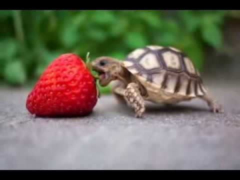

I feel much like this turtle, determined at a task far too great for him. But with every bite, both I and the turtle shall surely know victory. Why these colors? I don't know. Early on I decided I would gain nothing by hunting for the exact shade, and lose time by trying. They pleased me. Look at that little guy! He's going to eat that whole darn strawberry. Or at least he'll tell his turtle friends he managed it.